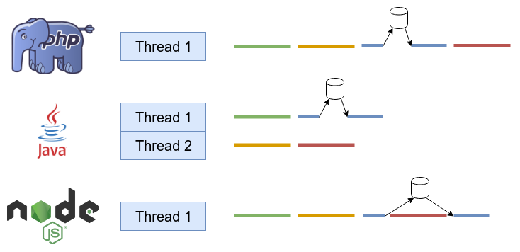

Qu'est-ce que NodeJS ?
- Environnement d'exécution JavaScript côté serveur
- Basé sur le moteur JavaScript V8 de Google
- Open-source et multi-plateforme
- Créé par Ryan Dahl en 2009

Un moteur JavaScript est un programme permettant d'exécuter du code JavaScript.
L'ensemble des navigateurs web utilisent un moteur JavaScript :
NodeJS est basé sur le moteur JavaScript V8 développé initialement pour le navigateur Google Chrome.
Pour connaitre la version utilisée avec votre version de NodeJS, vous pouvez utiliser la commande ci-dessous :
node -p process.versions.v8Rendu open source en 2008, V8 permet de compiler du code JavaScript en code machine plutôt que de l'interpréter à la volée (JIT).
Il est possible d'ajouter du code C++ au moteur V8. C'est ce qui a permis en 2009 le développement de NodeJS.
libuv est une librairie multi-plateformes écrite en C et permettant de gérer la partie asynchrone de NodeJS.
Cette librairie a été développée pour le projet NodeJS mais elle est maintenant utilisée dans d'autres projets.

Contrairement à d'autres langages tels que le Java ou le C#, NodeJS n'est pas conçu pour supporter le multithreading.
Cependant, le système d'event loop permet dans certains cas d'obtenir de meilleurs performances.
Si une tâche n'implique pas de traitement lourd comme faire un calcul ou affecter une valeur à une variable, Event loop va réaliser le traitement.
Cependant, s'il s'agit d'un traitement lourd comme écrire dans un fichier ou rechercher des données en base de données, le traitement sera dans ce cas attribué au Worker pool et ce fera dans un nouveau thread.
NodeJS est disponible sur nodejs.org
Cette installation va également installer le gestionnaire de paquets NPM (Node Package Manager).
NodeJS est un projet open-source et est donc en constante évolution.
Il existe deux versions de NodeJS :
Il est conseillé d'utiliser la version LTS pour un projet en production.
NPM est le gestionnaire de paquets officiel de NodeJS.
Il permet d'installer des modules NodeJS et de gérer les dépendances d'un projet.
Il est également possible de créer des modules et de les publier sur le registre npmjs.com.
Créer un dossier pour votre projet et initialiser le projet avec la commande npm init.
mkdir my-project
cd my-project
npm initVous pouvez également utiliser la commande npm init -y pour créer le projet avec les valeurs par défaut.